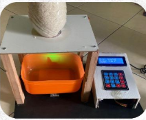

Automatic Rice Weighing System (ESP32)
Timbangan beras otomatis berbasis ESP32 dengan load cell, sensor inframerah, dan servo untuk mengatur aliran beras dan menimbang secara real time.
Mahasiswa Mekatronika & Kecerdasan Buatan
Tertarik pada IoT, otomasi, dan machine learning. Sedang mencari kesempatan magang untuk mengembangkan skill dan berkontribusi ke dunia industri.
Tentang Saya
Saya adalah mahasiswa Program Studi Mekatronika dan Kecerdasan Buatan di Universitas Pendidikan Indonesia Kampus Purwakarta. Fokus saya pada pengembangan sistem berbasis Internet of Things (IoT), otomasi, dan penerapan machine learning untuk pemecahan masalah dunia nyata.
Saya terbiasa bekerja dalam tim, mengelola proyek, dan membuat dokumentasi teknis. Saya tertarik untuk magang di perusahaan yang bergerak di bidang teknologi, manufaktur, otomasi, atau riset berbasis data.
Skill
Beberapa skill utama yang saya gunakan dalam perkuliahan, projek, dan eksperimen pribadi.
Python, C/C++, Java, JavaScript, Html, Css, Robot Programming
Arduino, ESP32, Omron PLC, Delta PLC, Dobot Robotic Arm Manipulation
Pnerapkan ML dan computer vision untuk projek seperti deteksi kantuk, gesture tangan, dan analisis data sederhana
Git, Figma/Canva, Microsoft Office, Microsoft Word, SPSS
Portfolio
Beberapa projek yang pernah saya kerjakan.
Timbangan beras otomatis berbasis ESP32 dengan load cell, sensor inframerah, dan servo untuk mengatur aliran beras dan menimbang secara real time.
Membangun sistem deteksi real-time yang menggabungkan pose estimation, hand tracking, dan eye tracking menggunakan MediaPipe. Sistem dapat menghitung jumlah jari dengan suara dan mendeteksi mata tertutup menggunakan EAR. Proyek ini dibuat dengan Python, OpenCV, dan MediaPipe sebagai prototipe awal sistem anti-kantuk dan kendali gestur berbasis computer vision.
Merancang dan memprogram PLC Omron dengan CX-Programmer untuk mengoperasikan double-acting cylinder secara otomatis dalam siklus maju–mundur setiap 3 detik. Sistem menggunakan dua sensor proximity untuk batas gerak dengan akurasi tinggi, serta dilengkapi mode manual, tombol aktivasi, dan emergency stop. Rancangan ini memastikan operasi yang aman dan stabil pada hydraulic trainer.
Mengembangkan AI berbasis terminal menggunakan Python dan OpenRouter API, dengan fitur konversi file, pengecekan status sistem, serta pemrosesan perintah otomatis melalui regex. Sistem menampilkan output berwarna dan dibuat modular agar mudah dikembangkan.
Mengembangkan sistem pakar berbasis web untuk diagnosis jenis katarak menggunakan metode Forward Chaining dan Certainty Factor. Sistem dibangun dengan HTML, CSS, JavaScript, serta basis aturan JSON, dan menampilkan gejala, tingkat keyakinan, serta hasil diagnosis secara interaktif dan responsif.
Merancang prototype aplikasi Edu Connect dengan Figma untuk membantu orang tua mencari dan memesan tutor. Fitur meliputi pencarian tutor, profil, jadwal ketersediaan, dan sistem pemesanan dengan alur yang sederhana dan mudah dipahami.
Merancang dan membuat power bank portabel berbasis dinamo yang menghasilkan listrik melalui mekanisme tuas tekan. Energi mekanik diubah menjadi listrik dan disimpan untuk mengisi perangkat seluler, sebagai penerapan konsep energi terbarukan skala kecil dan sistem penyimpanan daya portabel.
Mengembangkan aplikasi desktop Farminista dengan JavaFX untuk membantu petani dan pengelola kelompok tani dalam administrasi dan pembukuan. Aplikasi ini mendukung pengelolaan data petani, pencatatan transaksi, serta penyimpanan data terstruktur di MySQL. Proyek ini menerapkan konsep OOP, koneksi database (JDBC), serta form input dan tabel data yang interaktif.
Merancang sistem otomasi berbasis PLC Delta menggunakan ISPSoft serta HMI dengan DOPSoft. Simulasi mencakup kontrol level air, pengisian botol berbasis konveyor, dan pemantauan tangki. HMI dilengkapi tombol kendali, alarm, dan animasi proses, sementara ladder logic digunakan untuk mengendalikan aktuator dan menampilkan status real-time.
Kontak
Tertarik untuk berdiskusi atau menawarkan kesempatan magang? Silakan hubungi saya melalui form ini atau langsung lewat email / media sosial.